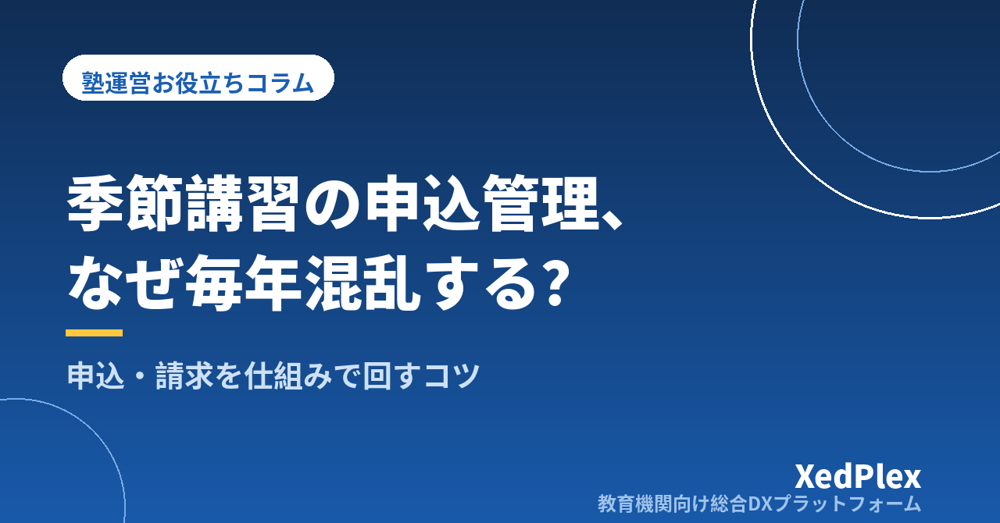

塾の夏期講習・季節講習の申込・請求管理を混乱させないコツ｜次の講習で慌てないための仕組み

夏期講習が終わり、ようやく一息つけた頃でしょうか。振り返ってみると、申込用紙とLINEと口頭の返事があちこちに散らばり、締切後の追加や変更が相次ぎ、請求の直前になって「あの子は結局何コマ受けたんだったか」と申込書をめくり直す──。講習のたびに同じ慌ただしさを繰り返している塾長は少なくありません。
季節講習の事務は、通常月とは別物です。通常月がうまく回っている塾でも、講習期だけは混乱するのには構造的な理由があります。この記事では、講習の申込・請求管理が混乱する原因を分解し、コース設計・申込の受け方・請求の段取り・終了後の振り返りという流れで、仕組みで回すコツを整理します。夏期講習の記憶が残っている今こそ、冬期講習に向けて仕組みを見直す絶好のタイミングです。
なぜ季節講習の事務は通常月の何倍も混乱するのか
まず、講習期の事務が通常月とどう違うのかを比べてみます。
| 通常月 | 講習期 | |
|---|---|---|
| 受講内容 | 全員ほぼ固定（毎週同じ曜日・コマ） | 生徒ごとに科目・コマ数がバラバラ |
| 金額 | 毎月ほぼ同じ月謝 | 生徒ごとに違う臨時の講習費 |
| スケジュール | 年間予定どおり | 案内・申込・時間割・請求が数週間に凝縮 |
| 変更 | たまに発生 | 締切後の追加・減コマ・キャンセルが頻発 |
整理すると、混乱の原因は大きく3つに分けられます。
- 生徒ごとに内容が違う：通常月は「名簿×固定コース」で回りますが、講習は一人ひとり受講内容が異なるため、把握すべき情報量が一気に増えます。
- 受付の経路が複数ある：申込書、保護者からのLINEやメール、面談中の口約束、生徒経由の伝言──経路が増えるほど、聞き漏れと食い違いが生まれます。
- 請求が通常月謝と別立てになる：毎月同じ額なら間違えようがない請求も、生徒ごとに違う臨時の金額となると、転記ミスや反映漏れが起きやすくなります。
つまり講習期の混乱は、塾長の注意力の問題ではなく、「情報量が増えるのに、受け皿の仕組みが通常月のまま」という構造の問題です。だからこそ、気合ではなく仕組みで対処できます。
コース設計の段階で混乱の芽を減らす
講習事務の混乱は、実は案内を配る前のコース設計の段階でかなり決まっています。ポイントは「あとで計算・確認する場面を減らす」ことです。
メニューを増やしすぎない
科目×学年×コマ数の組み合わせを完全に自由にすると、申込の集計も時間割も請求も、そのぶん複雑になります。小規模塾なら、学年ごとに「基本パック（推奨コマ数）＋追加は1コマ単位」のように、推奨パッケージを軸にして、自由度は追加分だけに絞ると、案内も集計も格段に楽になります。
料金表を「1枚」にまとめる
保護者に見せる案内の料金表と、請求額を計算するときの元データが別々になっていると、改定漏れや食い違いの原因になります。コマ単価・パック料金・教材費・割引条件（兄弟割引、早期申込など）を1枚の料金表に集約し、案内にも請求にも同じ1枚を使うのが原則です。割引は「〇〇の場合は△△円引き」と条件と金額を数値で書き切り、その場の裁量で値引きしないこともルールにしておきます。
申込の受け方は「窓口一本化」と「3つの締切」
講習の聞き漏れ・食い違いの大半は、申込の受け方で防げます。
申込は所定の1枚（またはフォーム）に一本化する
紙の申込書でも入力フォームでもかまいませんが、「所定の申込書に書かれたものだけが確定」というルールを決め、保護者にもそう案内します。面談中の「じゃあ英語も追加で」やLINEの「数学は3回でお願いします」は、その場でメモしたうえで「申込書のご提出をもって確定とさせていただきます」と一言添えて、必ず申込書に反映してもらいます。口頭やチャットの断片を塾長の記憶で束ねるのをやめるだけで、食い違いは大きく減ります。
申込書に入れておきたい項目は次のとおりです。
- 生徒名・学年／受講する科目とコマ数（パック名）
- 希望日時・出られない日（帰省や大会の予定）
- 合計金額の記入欄（保護者にも金額を確認してもらう）
- 締切日・変更やキャンセルの期限と取り扱い／保護者サイン欄
締切は「申込・変更・キャンセル」の3つを決める
締切を「申込締切」の1つしか決めていないと、締切後の追加や直前のキャンセルへの対応がすべてその場の判断になり、消耗します。申込締切・変更締切（コマの増減はいつまでか）・キャンセル期限（いつまでなら講習費がかからないか）の3つをあらかじめ決め、案内と申込書の両方に明記しておきましょう。とくにキャンセルや中途解約時の講習費の取り扱いは、あいまいなままだと保護者とのトラブルの元になり、実際に消費生活相談の窓口にも講習料の返金をめぐる相談が寄せられています。事前に書面で示しておくことは、保護者だけでなく塾自身を守ることにもつながります。
講習費の請求は「確定した申込一覧」だけを元にする
請求ミスのほとんどは、金額の計算そのものではなく、元データが散らばっていることから生まれます。段取りはシンプルです。
- 申込一覧表を1つだけ作る：締切後、申込書の内容を「生徒名・受講内容・金額・変更履歴」の一覧表（紙でもエクセルでも可）に転記します。以後、時間割づくりも請求もこの1枚だけを見る、と決めます。
- 変更はまず一覧表に書く：締切後の追加・減コマは、申込書ではなく一覧表の該当行を直し、日付を添えます。「どれが最新か分からない」を防ぐためです。
- 請求書は一覧表から機械的に作る：請求の直前に記憶で補正するのではなく、一覧表の金額をそのまま反映します。通常月謝と合算して1枚で請求するか、講習費だけ別に請求するかも事前に決めて、案内に明記しておきます。
- 入金は「申込一覧→請求→入金」の3点で突き合わせる：入金確認も同じ一覧表にチェック欄を設ければ、未納の見落としを防げます。
請求業務そのものの整え方は「塾の請求書発行を効率化・自動化する手順」で、集金方法ごとの比較は「個人塾の月謝管理・集金方法まとめ」で詳しく書いています。通常月の請求が名簿と連動する形で整っていれば、講習費はそこに「臨時の1行」を足すだけになり、講習期の負担は大きく下がります。
講習期間中の変更・出欠は「その場で台帳に」
講習が始まってからの混乱の多くは、期間中の変更を付箋やメモ紙、頭の中で持ってしまうことが原因です。対策は1つだけ──講習中の欠席・振替・コマ変更は、発生したその場で申込一覧表（台帳）に書くと決めることです。電話を切った直後、LINEを読んだ直後の30秒を惜しまない仕組みにしておくと、講習後の請求調整や保護者への説明が「台帳を見れば分かる」状態になります。
欠席・振替のルールは通常期と同じ考え方で設計できます。詳しくは「塾の欠席・振替管理のルール作りと運用」を、講習期の座席・コマの組み方は「個別指導塾の座席・コマ管理の考え方」をご覧ください。
講習が終わった直後が、次の講習の準備のはじまり
そして、いちばん効果が大きいのに忘れられがちなのが、終わった直後の振り返りです。記憶が新しいうちに、次の4つだけメモしておきましょう。
- 申込率と申込の集まり方（締切前に駆け込みが集中しなかったか）
- 締切後の変更・キャンセルの件数と、そのとき困ったこと
- 請求で慌てた点・ヒヤリとした点
- 案内配布から請求完了まで、自分が事務に使った時間
このメモが、冬期講習の設計図になります。冬期は夏期より期間が短く、年末年始を挟むぶん段取りがタイトです。逆算のスケジュールも今のうちに決めてしまいましょう。
| 時期の目安 | やること |
|---|---|
| 10月中〜下旬 | 夏の振り返りを反映してコース・料金表・申込書を確定 |
| 11月中旬 | 案内を配布（3つの締切を明記） |
| 11月末〜12月上旬 | 申込締切→申込一覧表を作成、時間割を確定 |
| 12月中旬 | 講習費の請求（通常月謝との合算方法は案内どおりに） |
| 講習終了直後 | 4項目の振り返りメモ→春期に反映 |
- 講習期の混乱は注意力ではなく仕組みの問題。情報量が増える前提で受け皿を作る
- コースはパッケージを軸に絞り、料金表は案内と請求で同じ1枚を使う
- 申込は所定の1枚に一本化し、申込・変更・キャンセルの3つの締切を明記する
- 請求と入金確認は「確定した申込一覧表」だけを元にする
- 終わった直後の振り返りメモが、次の講習のいちばんの準備になる
まとめ
季節講習は、塾の1年の中でも収入と指導の山場である一方、事務の山場でもあります。混乱の正体は「生徒ごとに内容が違う」「受付経路が複数ある」「請求が別立てになる」という構造にあり、コース設計・窓口の一本化・締切の明文化・台帳の一元化で、その大部分は防げます。夏の慌ただしさを覚えているうちに、まずは振り返りメモの4項目を書き出すところから始めてみてください。それだけで、冬期講習の景色は変わります。
この記事を書いた運営より
私たちは、個人経営・小規模の学習塾向けに、生徒管理・QRコードでの入退室記録・月次請求・保護者へのLINE/メール通知・AIによる学習支援までをひとつにまとめた教育機関向け総合DXプラットフォーム「XedPlex（ゼドプレックス）」を開発・提供しています。初期費用は0円、料金は生徒1名あたり月額300円（税込）から。生徒50名の塾なら月15,000円（税込）です。全国8つの教室で導入されており、導入塾には紹介ホームページの無料作成も行っています。機能の詳細説明はこちら。
XedPlexの詳細を見る